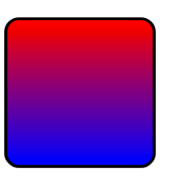
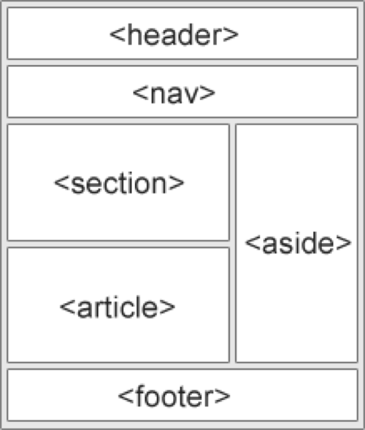

Using the descendant selector
- The descendant selector matches all elements that are descendants of given element
- We can use it to avoid the over use of id’s and class attributes
css
#contact_section p{
font-color: grey;
font-size: 10px
}
html
<div id=“contact_section”>
<p> This will be grey </p>
<p> I’ll also be grey </p>
</div> <!-- /#contact_section -->
Lists For Navigation Bar’s
List are a great way to group common elements, therefor they are the go to when it comes to implementing menus in HTML.
We can use the HTML descendant selector to target child elements of our
<ul>
html
<div id="header">
<ul>
<li><a href="#"> Home </a></li>
<li><a href="#"> Contact </a></li>
<li><a href="#"> About </a></li>
</ul>
</div> <!-- /#header -->
css
#header ul li {
list-style: none; /** removes bullet points 8*/
display: inline; /*flattens the list **/
margin-left: 10px; /** spaces out the menu **/
}
CSS3 Gradient And Radius
- CSS3 is the latest version of CSS
- There are many new exciting features
- For example, it's now easy to apply effects to our html elements
- Look how easy it is to create an interesting effect on the below
<div>, by using the radius and gradient property.

.box1{
width: 100px;
height: 100px;
border: 2px solid black;
border-radius: 10px;
background: linear-gradient(red, blue);
}
HTML5 Semantic Elements
- HTML5 gives us the option to use HTML elements that are more expressive. This is good news, as we don't have to use
<div>'s for everything - We can replace now
<div>’s with more meaningful tags - E.G. Instead of using
<div id=“header”>we can use thetag
HTML5 Semantic Elements Examples

<header>: defines a header for a document or a section<nav>- defines a container for navigation links<section>- defines a section in a document<article>- defines an independent self-contained article<aside>- defines content aside from the content (like a sidebar)<footer>- defines a footer for a document or a section
Example of a HTML 5 Layout
<body>
<div id=“wrapper”>
<header>
<h1>Header</h1>
</header>
<aside>
<nav>
<p> This is your left navigation … </p>
</nav>
</aside>
<section>
<h2>Subheading</h2>
<p> This is the content part … </p>
</section>
<footer>
<p> Footer </p>
</footer>
</div> <!-- ./wrapper -->
</body>